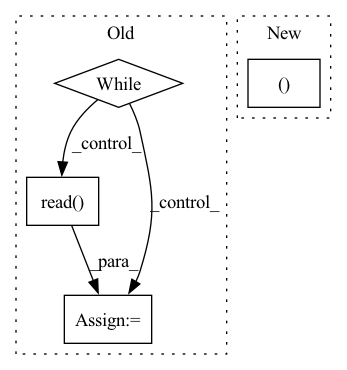

Pattern ID :9870

Before Change
def get(self) -> np.ndarray:
img: Union[None, np.ndarray] = None
while img is None and self.last_idx < self.frame_count:
status, img = self.video_handler.read()
self.last_idx += 1
if img is not None:
img = cv2.cvtColor(img, cv2.COLOR_BGR2RGB)
After Change
return self.frame_count
def get(self) -> np.ndarray:
self.last_idx, img = next(self.data_iterator)
return img
def save(self, img: np.ndarray):
In pattern: SUPERPATTERN
Frequency: 3
Non-data size: 4
Instances
Fragment ID: 35349327
Project Name: mike9251/simswap-inference-pytorch
Commit Name: dda2a8f82da64a18fd1325a636b3032b53af1c88
Time: 2022-12-10
Author: soapbox92@gmail.com
File Name: src/DataManager/VideoDataManager.py
M Class Name: VideoDataManager
N Class Name: VideoDataManager
M Method Name: get(1)
N Method Name: get(1)
M Parent Class: BaseDataManager
N Parent Class: BaseDataManager
M File Name: src/DataManager/VideoDataManager.py
N File Name: src/DataManager/VideoDataManager.py
M Start Line: 43
M End Line: 52
N Start Line: 41
N End Line: 41
'>
Before Change
buf = io.BytesIO()
size = 0
while True:
buf1 = resp.read(blocksize)
if not buf1:
break
buf.write(buf1)
size += len(buf1)
After Change
print(f"Dataset already downloaded at {file_name}.")
else:
opener = urllib.request.build_opener()
opener.addheaders = [("User-agent", "Wget/1.20.3 (linux-gnu)")]
urllib.request.install_opener(opener)
urllib.request.urlretrieve(url, file_name, ProgressBar().update)
'>
Fragment ID: 35349326
Project Name: continvvm/continuum
Commit Name: 21c44f320830e89c7754209a9c98affafb0932c8
Time: 2020-06-17
Author: ar.douillard@gmail.com
File Name: continuum/download.py
M Class Name: AnonimousClass
N Class Name: AnonimousClass
M Method Name: download(2)
N Method Name: download(3)
M Parent Class:
N Parent Class:
M File Name: continuum/download.py
N File Name: continuum/download.py
M Start Line: 6
M End Line: 36
N Start Line: 7
N End Line: 17
'>
Before Change
cap = cv2.VideoCapture(path)
cap.set(1, start)
nb_frames = 0
while True:
ret, img = cap.read()
assert ret, "exception: {}, start={}, length={}".format(path, start, length)
if crop_augment: pass
if mirror_augment: img = cv2.flip(img, 1)
frames.append(img)
After Change
if len(frames) > 0: img = frames[-1]
else: img = np.zeros((112, 112, 3), dtype=np.uint8)
if crop_augment:
img = cv2.resize(img, (128, 128))
if is_training:
crop_x = random.randint(0, 16)
crop_y = random.randint(0, 16)
'>
Fragment ID: 35349328
Project Name: sailordiary/m3f.pytorch
Commit Name: 639f60090b44d3fdb3b40ae0df467ffed523da9e
Time: 2020-02-01
Author: me@sailorzhang.com
File Name: models/dataset.py
M Class Name: AnonimousClass
N Class Name: AnonimousClass
M Method Name: load_video(7)
N Method Name: load_video(6)
M Parent Class:
N Parent Class:
M File Name: models/dataset.py
N File Name: models/dataset.py
M Start Line: 50
M End Line: 75
N Start Line: 47
N End Line: 70